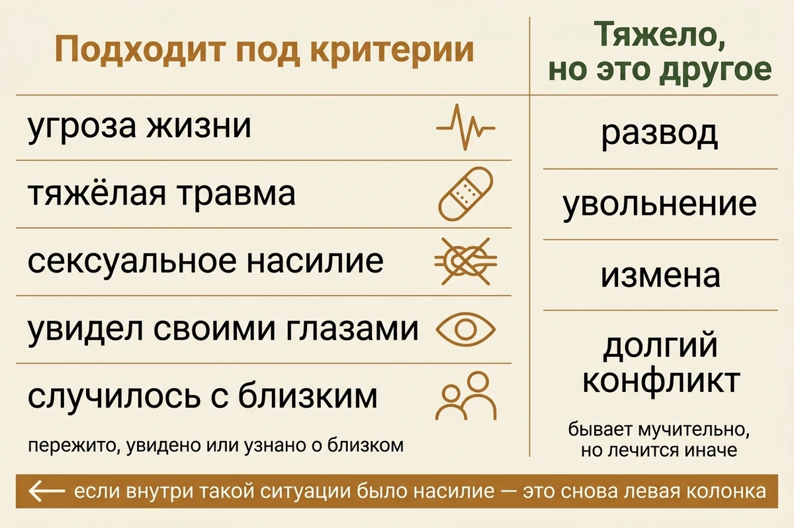
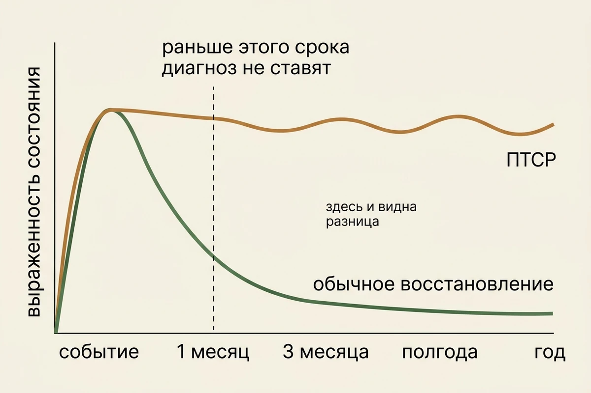
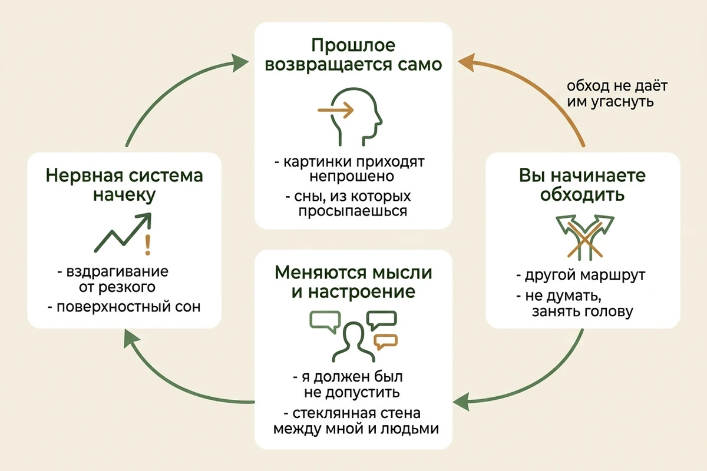
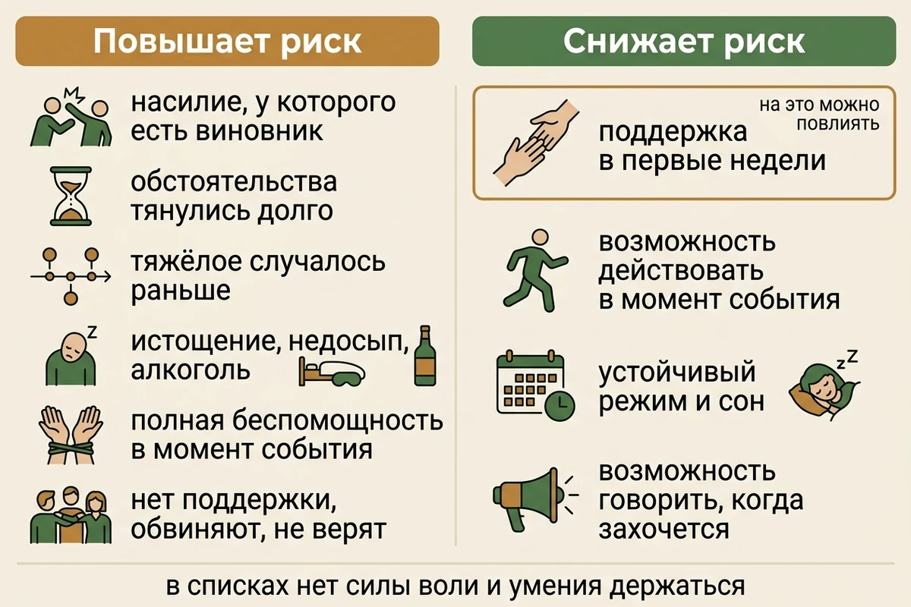
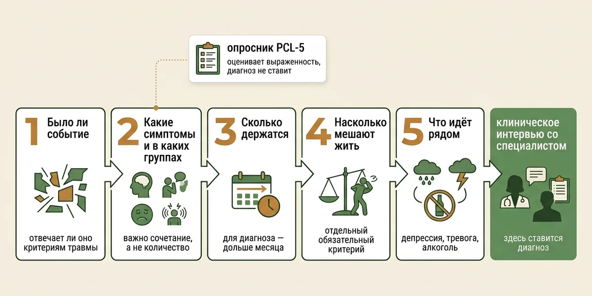
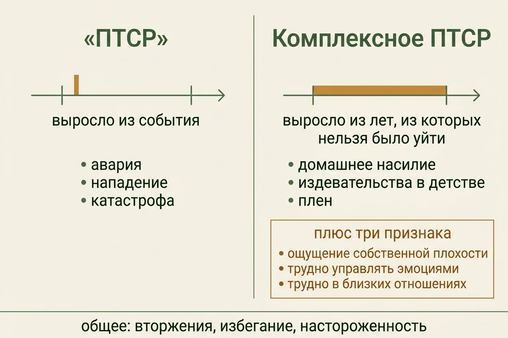
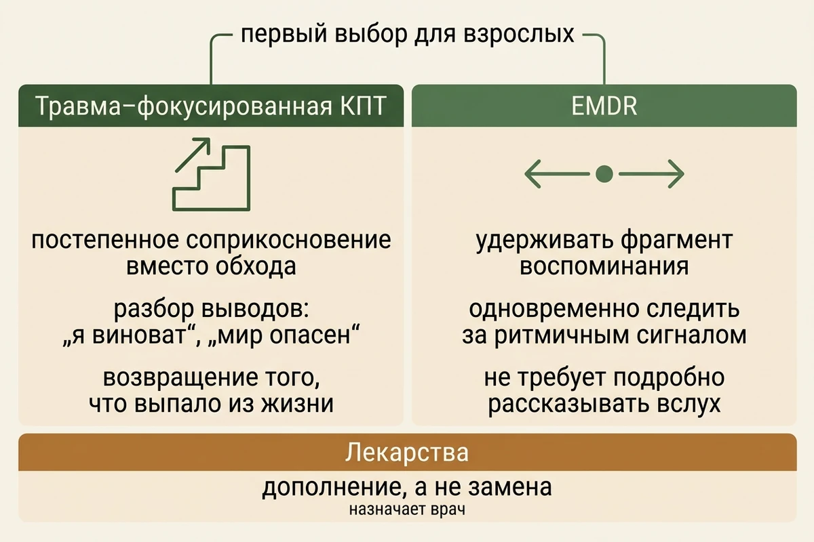
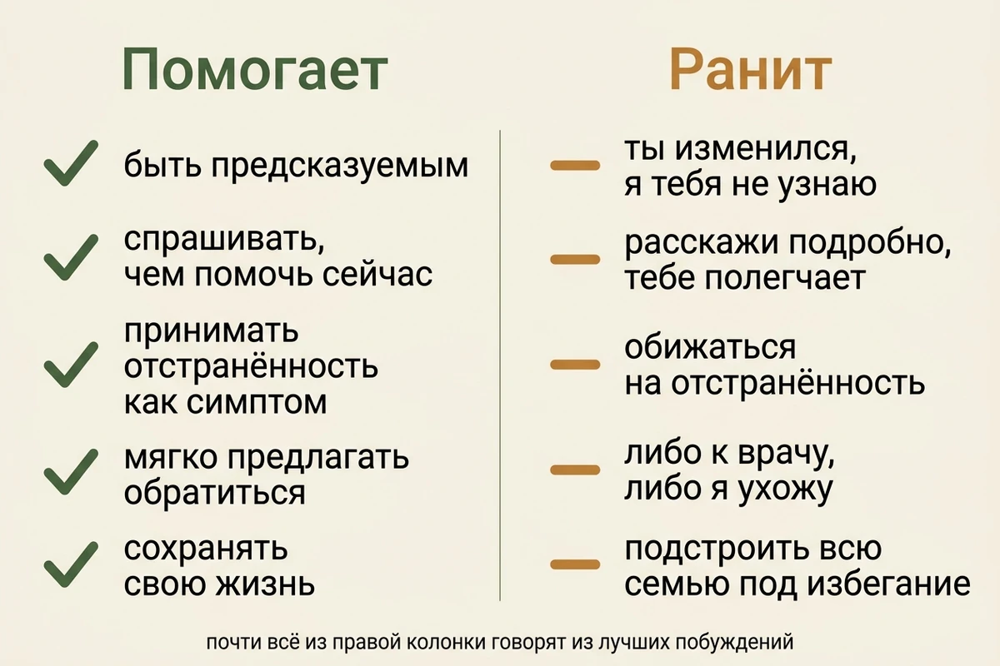

ПТСР: 12 признаков, почему возникает и как его лечат
Обновлено: 08.09.2026 · 15 минут чтения
Посттравматическое стрессовое расстройство — это не «не смог пережить» и не слабость характера. Это сбой в том, как психика убирает случившееся в прошлое: событие закончилось, а нервная система продолжает вести себя так, будто оно всё ещё длится. Отсюда и картина: воспоминания приходят непрошено, тело реагирует на безобидные вещи как на угрозу, а жизнь постепенно сужается вокруг того, чего надо избегать. Ниже — чем ПТСР отличается от нормального восстановления, по каким признакам его узнают, почему оно развивается у одних и не развивается у других, что такое комплексное ПТСР и какое лечение действительно работает.
Не ждите месяца и не проходите никаких тестов, если после тяжёлого события появились мысли о самоубийстве или о том, чтобы навредить себе или другим; если вы теряете контроль над поведением; если резко выросло употребление алкоголя или веществ; если вы не понимаете, где находитесь и что происходит, или не можете обеспечить себе безопасность.
При непосредственной угрозе жизни — 112. Круглосуточная линия ЦЭПП МЧС России — +7 (495) 989-50-50. Куда ещё можно обратиться бесплатно — в справочнике помощи.
- Если тяжёлое случилось недавно
- После чего может развиться ПТСР
- Что такое ПТСР и чем оно отличается от тяжёлых воспоминаний
- ПТСР или нормальная реакция на тяжёлое
- 12 признаков
- Почему у одних развивается, а у других нет
- Когда появляется и сколько длится
- Как ставят диагноз
- Комплексное ПТСР: когда травмой были не событие, а годы
- Как это выглядит со стороны
- Как лечат: что делают на самом деле
- Что не помогает
- Что делать близким
- Как выбрать специалиста
- Частые вопросы
Если тяжёлое случилось недавно
Если событие произошло на днях или неделю назад, самое полезное, что можно сейчас узнать: то, что с вами происходит, скорее всего нормально. Бессонница, накатывающие картинки, оцепенение, слёзы на ровном месте, а иногда наоборот — странное спокойствие и ощущение, что всё это не с вами. Это не признаки расстройства, это работа психики над тем, что не помещается.
- Не требуйте от себя выводов и решений. Первые недели — не время принимать важное. Отложите всё, что можно отложить.
- Верните хотя бы каркас режима. Сон, еда, вода, короткая прогулка. Это звучит банально, но именно недосып сильнее всего раскачивает состояние.
- Будьте рядом с людьми, даже молча. Поддержка после события — самое сильное из известных защитных обстоятельств, сильнее любых личных качеств.
- Не заставляйте себя подробно всё пересказывать. Говорите столько, сколько хочется. Требование «выговорись» на этой стадии не помогает и может усилить состояние.
- Не глушите алкоголем. Он отбирает вторую половину ночи — ровно ту, в которой перерабатывается эмоциональный опыт.
- Дайте себе месяц. Если через месяц не станет легче — вот тогда это повод обратиться, и вы будете знать почему.
После чего может развиться ПТСР
Вопрос не праздный: «ПТСР после развода», «после расставания», «после родов», «после токсичных отношений» — так люди чаще всего и формулируют. Ответ здесь важно дать честно, потому что он в обе стороны неудобный.
Диагностические системы описывают травматическое событие довольно узко: столкновение со смертью, угрозой жизни, тяжёлой травмой или сексуальным насилием — пережитое самому, увиденное своими глазами, или известие, что такое случилось с близким человеком. Сюда же относят работу, где подобное приходится видеть регулярно: спасатели, врачи скорой, следователи.
Отсюда первая половина ответа: сильный стресс сам по себе — ещё не травма в этом смысле. Развод, увольнение, измена, тяжёлый разрыв бывают мучительными и могут привести к депрессии или тревожному расстройству, но формально критериям травматического события они обычно не отвечают. Это не обесценивание: просто помощь при них устроена иначе, и мерить их шкалами ПТСР бессмысленно.
Вторая половина такая. Внутри тех же ситуаций травматический эпизод вполне может быть — и тогда речь снова о ПТСР. В разрушительных отношениях это физическое или сексуальное насилие; в родах — реальная угроза жизни матери или ребёнка; в болезни — реанимация и ощущение, что вы умираете. Смотрят не на название ситуации, а на то, что в ней произошло.
И третье, о чём чаще всего забывают: событие не обязано быть недавним. Тяжёлое, случившееся в детстве, работает по тем же правилам — об этом отдельно в статье о детских травмах.

Что такое ПТСР и чем оно отличается от тяжёлых воспоминаний
Разница не в том, насколько ужасным было событие, и не в том, насколько тяжело вспоминать. Разница в том, где находится случившееся.
Обычное тяжёлое воспоминание лежит в прошлом. Вы можете к нему обратиться, вам будет больно, но вы всё время знаете, что это было и закончилось. При ПТСР событие ведёт себя иначе: оно не убрано в прошлое, а как будто продолжает происходить. Поэтому воспоминание приходит само, без вашего решения, и приходит не как рассказ, а как ощущение — запах, звук, толчок в груди, картинка. Объяснить это можно так: воспоминание о травме остаётся недостаточно встроенным в обычную память о прошлом, и потому напоминание способно запускать реакцию такой силы, будто опасность рядом прямо сейчас. Это способ описать происходящее, а не точная схема работы мозга: механизмы ПТСР до конца не изучены.
Отсюда вторая половина картины. Раз опасность как бы всё ещё здесь, нервная система остаётся в режиме готовности: сон поверхностный, вздрагивание от резкого, постоянное сканирование обстановки. А раз напоминания причиняют боль, человек начинает их обходить — не ездить по той улице, не смотреть новости, не говорить об этом. И вот тут возникает ловушка.
Избегание — один из главных механизмов, которые поддерживают состояние. Каждый раз, когда вы обходите напоминание, становится легче, и обход закрепляется. Но вместе с облегчением уходит и возможность постепенно убедиться на опыте, что само напоминание уже не означает опасности. Поэтому ПТСР так плохо проходит «само»: человек добросовестно делает то, что приносит облегчение, и этим поддерживает круг. Оговорка важная: одним избеганием расстройство не объясняется — ВОЗ описывает ПТСР как результат взаимодействия социальных, психологических и биологических факторов, и вклад вносят и характер события, и предшествующий опыт, и сон, и чувство вины, и обстановка вокруг. Тот же механизм, только вокруг другого содержания, держит навязчивые мысли и социальную тревожность.

ПТСР или нормальная реакция на тяжёлое
Самый частый вопрос первых месяцев. Разводит их не сила переживаний в моменте, а направление, в котором всё движется.
| Признак | Обычное восстановление | ПТСР |
|---|---|---|
| Со временем | Постепенно слабеет | Держится на месте или усиливается |
| Воспоминания | Становятся менее захватывающими, к ним можно вернуться по своей воле | Приходят непрошено и переживаются как происходящее сейчас |
| Жизнь вокруг | Человек постепенно возвращается к делам и людям | Всё сильнее выстраивается вокруг того, чего надо избегать |
| Сон | Понемногу восстанавливается | Нарушения держатся месяцами |
| Настороженность | Спадает | Остаётся выраженной |
Практическое следствие: судить о себе по одному тяжёлому дню нельзя, а по динамике за месяц — можно. Если через месяц после события всё ровно там же, где было в первую неделю, это и есть тот сигнал, ради которого стоит читать дальше.
12 признаков и проявлений
Ни один отдельный признак сам по себе ничего не подтверждает, и не все из перечисленных обязательны. Значение имеет сочетание: сколько их, как долго держатся, связаны ли с конкретным событием и насколько мешают жить. Часть пунктов ниже — не строгие диагностические критерии, а частые спутники, которые практически важно знать.
Проявления удобно разбирать по четырём направлениям — так видно, что это не набор случайных жалоб, а одна связная картина. Ниже — то, как они выглядят в обычной жизни, а не в формулировках классификаций.
Прошлое возвращается само
- Картинки приходят непрошено. Не когда вы вспоминаете, а когда занимаетесь чем-то другим. Отличие от обычных мыслей — вы их не начинали.
- Сны, из которых вы просыпаетесь с сердцебиением. Иногда буквально о событии, иногда «по мотивам»: сюжет другой, ощущение то же.
- Секунды, в которые вы будто снова там. Самый известный признак и при этом не самый частый. Чаще это не киношный флешбэк, а короткое «провалился» — на пару секунд перестал понимать, где вы.
- Тело реагирует раньше головы. Знакомый запах, хлопок двери, похожая машина — и уже колотится сердце, хотя вы ещё не успели подумать.
Вы начинаете обходить
- Избегание снаружи. Другой маршрут, отказ от поездок, выключенные новости, несостоявшиеся встречи. Обычно это объясняют бытовыми причинами — «просто так удобнее».
- Избегание внутри. Попытки не думать, не чувствовать, занять голову чем угодно. Отсюда, кстати, часто берётся трудоголизм после тяжёлого года.
Меняются мысли и настроение
- Провалы в памяти о самом событии. Что-то помнится в мельчайших деталях, а кусок выпал целиком. Это не «плохая память» и не признак того, что вы придумали.
- Убеждения о себе и мире, которых раньше не было. «Я должен был не допустить», «людям нельзя доверять», «мир опасен». Часто это ощущается как прозрение, а не как симптом.
- Вина, в том числе за то, что выжили или уцелели. Один из самых мучительных признаков и один из самых стойких.
- Стеклянная стена между вами и остальными. Люди рядом, но как будто через плёнку; хорошие чувства к близким не включаются, и это пугает больше всего.
Нервная система не выходит из готовности
- Настороженность и вздрагивание. Спиной к двери сидеть невозможно, резкий звук подбрасывает, взгляд всё время сканирует.
- Срывы, риск и бессонница. Раздражительность, вспышки, рассыпающееся внимание, поверхностный сон. Сюда же — притупившееся чувство опасности: скорость, драки, алкоголь за рулём. Именно эту группу окружающие принимают за испортившийся характер.
Оценить, насколько всё это выражено у вас, можно по шкале PCL-5: двадцать вопросов, результат сразу и без регистрации. Важно понимать, что именно он показывает: это оценка выраженности симптомов и скрининг, а не ответ на вопрос, есть ли у вас ПТСР. Высокий балл диагнозом не является — он означает, что стоит дойти до специалиста, и даёт точку отсчёта, чтобы через месяц сравнить.

Почему у одних развивается, а у других нет
Через тяжёлые события в жизни проходит большинство людей, а ПТСР развивается у меньшинства. Отсюда вредный вывод, который делают почти все: значит, дело в том, кто крепче. Это неправда, и разбираться в причинах стоит хотя бы ради того, чтобы перестать себя за это винить.
- То, что было после события, весит не меньше, чем само событие. Поддержка в первые недели — один из важных защитных факторов: ВОЗ прямо указывает, что ощущение поддержки после потенциально травмирующего события снижает риск ПТСР. Нехватка поддержки, обвинения и недоверие окружающих, наоборот, повышают вероятность того, что симптомы закрепятся. К характеру это отношения не имеет.
- Насилие переносится тяжелее, чем стихия. Событие, у которого есть человек-виновник, разрушает базовое ощущение безопасности сильнее, чем землетрясение или авария.
- Длительность и невозможность уйти. Однократное происшествие и годы, из которых нельзя было выбраться, дают разную картину — об этом дальше, в разделе о комплексном ПТСР.
- Предыдущий опыт. Если тяжёлое случалось раньше, особенно в детстве, порог ниже. Об этом отдельно — в статье о детских травмах.
- Состояние на входе. Депрессия, истощение, недосып, употребление алкоголя в момент события — всё это уменьшает запас.
- Ощущение полной беспомощности в момент события. Не сама степень опасности, а то, была ли хоть какая-то возможность действовать.
Заметьте, чего в этом списке нет: силы воли, мужества, «умения держать себя в руках». Люди, которые внешне справлялись лучше всех и держались до конца, попадают в ПТСР ничуть не реже — иногда как раз потому, что держались.

Когда появляется и сколько длится
У этого диагноза есть условие по времени: симптомы должны держаться дольше месяца. Более ранние состояния описывают отдельными категориями, и у большинства людей они сходят на нет без всякого лечения. Отсюда практический вывод: одинаковая тяжесть состояния на первой неделе и через полгода говорит о разном, и делать выводы о себе в первые дни попросту не по чему.
Но «нет диагноза» не значит «нужно просто ждать». Если в первый месяц состояние тяжёлое и человек не справляется, помощь показана уже тогда — NICE предусматривает травма-фокусированную терапию и для этого периода. Месячный порог нужен, чтобы не называть расстройством нормальную острую реакцию, а не чтобы отказывать в помощи.
Чаще всего проявления разворачиваются в первые три месяца. Но бывает и отсроченное начало — через полгода и позже. Обычно это выглядит загадочно: человек «нормально пережил», а накрыло спустя год. Такое усиление связывают с последующими событиями — новым похожим стрессом или окончанием периода, когда человек был вынужден постоянно держаться: закончилась война, выздоровел ребёнок, разрешилась ситуация. Общего правила тут нет, в каждом случае это складывается по-своему.
Насчёт длительности честный ответ такой: без помощи состояние может держаться годами, и «время лечит» здесь работает хуже, чем в большинстве других случаев. Причина уже описана — избегание закрепляет само себя. С помощью сроки обозримые: при травме от одного события курс терапии нередко укладывается примерно в 8–12 встреч. Это не универсальный срок — при нескольких травмирующих событиях, комплексном ПТСР или сопутствующих расстройствах работы требуется заметно больше.
Как ставят диагноз
Диагноз не выводят из одного опросника и тем более не выводят из статьи. Специалист разбирает несколько вещей подряд:
- Было ли событие, отвечающее критериям травматического. С этого начинают, и именно тут отсеивается часть обращений.
- Какие симптомы есть и в каких группах. Важно не общее количество, а то, набирается ли картина по всем направлениям сразу.
- Сколько они держатся. Для диагноза нужен срок дольше месяца.
- Насколько они мешают жить. Это отдельный и обязательный критерий, а не довесок.
- Что идёт рядом. Депрессия, тревожные расстройства, употребление алкоголя, последствия черепно-мозговой травмы — всё это даёт похожую картину и меняет план помощи.
Про критерий «мешает жить» стоит сказать отдельно, потому что его чаще всего пропускают. ПТСР — это не «у меня бывают тяжёлые воспоминания и я плохо сплю». Симптомы должны приносить значительный дистресс или нарушать повседневную жизнь: работу, учёбу, отношения, способность выходить из дома. Человек с редкими воспоминаниями, который в остальном живёт как жил, и человек, бросивший работу из-за невозможности ездить в метро, находятся в разных положениях, даже если перечислят одни и те же жалобы.
Опросники в этой схеме занимают конкретное и скромное место. PCL-5 — не тест на наличие ПТСР: это валидированная шкала на 20 пунктов для оценки выраженности симптомов, скрининга и отслеживания динамики. Высокий балл не равен диагнозу. Для самой диагностики Национальный центр ПТСР считает предпочтительным структурированное клиническое интервью — например, CAPS-5, которое проводит подготовленный специалист.
Практически из этого следует простая вещь: результат самопроверки полезен как повод и как точка отсчёта, с которой можно прийти к специалисту и через месяц сравнить, — но не как ответ на вопрос «есть у меня ПТСР или нет».

Комплексное ПТСР: когда травмой были не событие, а годы
Отдельный диагноз, выделенный в МКБ-11. Обычное ПТСР вырастает из происшествия: авария, нападение, катастрофа. Комплексное связывают прежде всего с длительной или повторяющейся травматизацией — особенно в положении, из которого человеку было трудно или невозможно выбраться: домашнее насилие, издевательства в детстве, плен, длительная эксплуатация.
К обычной картине там добавляются три вещи, и как раз они определяют жизнь сильнее, чем воспоминания:
- стойкое ощущение собственной плохости — не «со мной случилось плохое», а «со мной что-то не так»;
- трудности с управлением эмоциями — от вспышек до полного отключения чувств;
- трудности в близких отношениях — сближаться страшно, дистанцироваться невыносимо.
Практическая разница в том, что человек с комплексным ПТСР обычно не приходит с запросом «у меня травма». Он приходит с тем, что отношения всё время разрушительные, что он себя ненавидит, что не может удержаться на работе. Помощь тут обычно дольше: специалисту нужно больше времени на безопасность, доверие и навыки регуляции. А вот последовательность подбирают индивидуально — универсального правила «сначала стабилизация, потом травма» нет: кому-то к самому опыту можно переходить сравнительно рано, кому-то нужен долгий подготовительный этап.

Как это выглядит со стороны
Со стороны ПТСР почти никогда не выглядит как ПТСР. Кино приучило к флешбэкам и крикам по ночам, а в жизни близкие видят другое: человек стал раздражительным, отдалился, срывается по мелочам, не хочет никуда ходить, много пьёт, перестал радоваться. Это читается как испорченный характер или как «разлюбил».
Отсюда две типичные беды. Первая: человека начинают воспитывать вместо того, чтобы помогать. Вторая: он и сам объясняет себе происходящее так же — «я стал плохим», — и это отлично ложится на уже возникшее ощущение собственной испорченности.
Полезный ориентир для близких: если перемена в человеке имеет дату, после которой всё стало иначе, — стоит думать не о характере, а о том, что случилось до этой даты.
Как лечат: что делают на самом деле
ПТСР относится к расстройствам, для которых существуют хорошо изученные и эффективные методы помощи, причём методы отдельные. И британское руководство NICE (NG116, последний пересмотр — июль 2026 года), и NHS называют первым выбором для взрослых две вещи: травма-фокусированную когнитивно-поведенческую терапию и EMDR. Разница принципиальная. Это не «походить к психологу поговорить»: у обоих методов есть описанная последовательность шагов, понятная цель каждого этапа и признаки, по которым видно, работает ли он.
Травма-фокусированная КПТ
Строится на трёх опорах. Первая — постепенное, дозированное соприкосновение с воспоминанием и с тем, чего человек избегает, чтобы психика получила наконец возможность обработать событие и датировать его прошлым. Вторая — работа с выводами, которые из события выросли: «я виноват», «мир опасен», «мне нельзя доверять себе». Третья — возвращение в жизнь того, что из неё выпало. Это разновидность КПТ, но с отдельным протоколом, а не общие приёмы.
EMDR
Метод, в котором человек удерживает в голове фрагмент воспоминания, одновременно следя за движущимся объектом или получая ритмичные сигналы. Звучит странно, и споры о том, почему это работает, продолжаются до сих пор. Но эффективность подтверждена достаточно, чтобы метод попал в рекомендации наравне с терапией; для многих он оказывается легче, потому что не требует подробно рассказывать случившееся вслух.
Лекарства
Первым выбором считается всё-таки психотерапия. Но лекарства при ПТСР применяют, и не только «на крайний случай»: NICE предлагает взрослым отдельные препараты из группы СИОЗС или венлафаксин — если человек предпочитает медикаментозное лечение, если терапии оказалось недостаточно или если рядом идут депрессия и другие расстройства. Решение принимает врач.
Отдельно про транквилизаторы бензодиазепинового ряда: их при ПТСР не рекомендуют. Пользы в предотвращении расстройства у них не показано, зато есть побочные эффекты и риск зависимости.

Что не помогает
- «Просто расскажи всё подробно». Разовый детальный пересказ вне продуманной работы — не только не помогает, но и может ухудшить состояние. От практики обязательного «разбора полётов» сразу после происшествий отказались именно поэтому.
- Ждать, если состояние не меняется. Восстановление действительно может идти и без лечения, в том числе не быстро: по оценке ВОЗ, до 40% людей с ПТСР выздоравливают в течение года. Но если симптомы держатся, усиливаются или заметно ограничивают жизнь, рассчитывать только на время не стоит — само по себе оно лечением не является.
- Алкоголь. Самый доступный способ выключить настороженность и самый быстрый путь к тому, чтобы к ПТСР добавилась ещё и зависимость.
- Переезд, увольнение, «начать с чистого листа». Иногда необходимо, но само по себе состояние не меняет: оно переезжает вместе с вами.
- Требовать от себя «отпустить и простить». Прощение может стать результатом работы, но не бывает её началом и уж точно не бывает обязанностью.
- Годами держаться на выдержке. Работает до первого момента, когда держаться станет не нужно, — и тогда обычно и накрывает.
Что делать близким
Роль близкого здесь больше, чем кажется: по данным ВОЗ, ощущение поддержки после потенциально травмирующего события снижает риск того, что разовьётся ПТСР.
| Что помогает | Что ранит |
|---|---|
| Быть предсказуемым: тот же голос, тот же режим, тот же вы | «Ты изменился, я тебя не узнаю» |
| Спрашивать, чем помочь сейчас, а не что случилось тогда | Выспрашивать подробности события «чтобы ты выговорился» |
| Принимать отстранённость как симптом, а не как охлаждение к вам | Обижаться и требовать прежней близости |
| Мягко и не единожды предлагать обратиться за помощью | Ультиматумы «либо к врачу, либо я ухожу» |
| Сохранять свою жизнь и свой круг общения | Растворяться и подстраивать всю семью под избегание |
| Замечать опасные признаки: алкоголь, риск, мысли о смерти | Делать вид, что ничего не происходит |
И отдельно — про вас. Жить рядом с человеком в таком состоянии тяжело, и усталость здесь не эгоизм. Если вы заметили у себя признаки выгорания, помощь нужна вам не меньше.

Если хочется просто проговорить
Иногда первое, что нужно, — сказать вслух, что происходит, и не встретить ни расспросов о подробностях, ни советов «отпустить». Это не лечение ПТСР и не заменяет специалиста: просто место, где можно рассказать столько, сколько готовы, и разобраться, что делать дальше. Анонимно, без регистрации, круглосуточно.
Как выбрать специалиста
Здесь важнее обычного, к кому именно вы попадёте: работа с травмой — та область, где неподготовленный специалист может навредить, слишком рано и слишком подробно уведя человека в воспоминания.
Что разумно спросить на первой встрече:
- работаете ли вы с травмой и по какому методу — травма-фокусированная КПТ, EMDR или другой;
- сколько встреч примерно предполагается и как мы поймём, что помогает;
- что будет, если станет хуже, и как мы это заметим;
- что делать между встречами, если накроет.
Внятные ответы на эти четыре вопроса — уже хороший признак. Настораживать должно обратное: обещание «проработать травму за одну сессию», давление в сторону подробного рассказа на первой же встрече и отсутствие внятного плана. Если нет возможности пойти к частному специалисту, посмотрите справочник бесплатной помощи.
И последнее, ради чего стоило читать всё предыдущее. Через тяжёлое проходят очень многие, а к специалисту доходят единицы — чаще всего потому, что человек считает своё состояние приговором себе: не выдержал, оказался слабее других. Из всего, что известно об этом расстройстве, именно это неверно категоричнее всего: список того, что предсказывает ПТСР, начинается не с качеств человека, а с того, что происходило вокруг него — до события и особенно после.
Частые вопросы
Как понять, что у меня ПТСР?
Ориентируйтесь не на силу переживаний, а на три вещи сразу: было конкретное тяжёлое событие; прошёл месяц и больше, а легче не становится; и жизнь начала перестраиваться под случившееся — вы обходите места и разговоры, срываетесь, плохо спите. Отдельный признак, который часто пропускают: происходящее возвращается против вашей воли, а не потому, что вы о нём вспоминаете. Окончательный вывод делает специалист, самопроверка только показывает, стоит ли к нему идти.
Через сколько времени после события появляется ПТСР?
Для диагноза нужно, чтобы симптомы сохранялись дольше месяца: более ранние состояния описывают отдельными категориями, и у большинства людей они проходят сами. Это не значит, что в первый месяц надо просто ждать: при тяжёлом состоянии помощь показана и тогда. Чаще всего проявления разворачиваются в первые три месяца. Но бывает и отсроченное начало — через полгода и позже; иногда его запускает новое похожее событие или окончание периода, когда человек был обязан держаться. Давность случившегося сама по себе ничего не отменяет.
Может ли ПТСР пройти само?
У части людей — да, особенно в первые месяцы и при поддержке близких. Но чем дольше держится состояние, тем меньше шансов на самостоятельное восстановление: избегание работает как замок, потому что оно приносит облегчение и потому закрепляется. Год и больше без изменений — это уже не «идёт своим ходом», а повод обратиться. Ждать имеет смысл недели, а не годы.
Чем комплексное ПТСР отличается от обычного?
Обычное ПТСР вырастает из события — аварии, нападения, катастрофы. Комплексное, которое выделено как отдельный диагноз в МКБ-11, связывают с длительной или повторяющейся травматизацией — особенно там, откуда человеку было трудно или невозможно уйти: домашнее насилие, издевательства в детстве, плен. К тем же симптомам добавляются три: стойкое ощущение собственной плохости, трудности с управлением эмоциями и трудности в близких отношениях. Помощь дольше и устроена иначе.
Как лечат ПТСР и сколько это занимает?
Первым выбором считаются два метода: травма-фокусированная когнитивно-поведенческая терапия и EMDR. Оба созданы именно под травму и работают по описанной последовательности шагов, а не как разговор в свободной форме. Курс обычно занимает от 8 до 12 встреч при травме от одного события; при комплексном ПТСР дольше. Антидепрессанты применяют как дополнение, когда терапии недостаточно или есть депрессия, но не вместо неё.
Бывает ли ПТСР после расставания, развода или измены?
Обычно нет — по крайней мере не в том смысле, в каком этот диагноз описан. Расставание и развод бывают мучительными и могут привести к депрессии или тревожному расстройству, но критериям травматического события сами по себе они не отвечают: там нужно столкновение со смертью, угрозой жизни, тяжёлой травмой или сексуальным насилием. Другое дело, если внутри отношений было насилие: тогда речь именно о травме, а при длительном насилии — о комплексном ПТСР.
Бывает ли ПТСР у детей?
Да, но выглядит оно иначе, и по взрослым признакам его легко не заметить. У детей чаще видны не рассказы о воспоминаниях, а повторяющиеся сюжеты в игре и рисунках, откат к более раннему поведению, ночные страхи, жалобы на живот и головную боль, резкая смена поведения в школе. Диагностику и помощь в этом случае подбирает детский специалист, и обращаться стоит тем раньше, чем младше ребёнок.
Как помочь близкому с ПТСР?
Не выспрашивайте подробности события и не заставляйте «выговориться»: пересказ вне продуманной работы может ухудшить состояние. Полезнее другое — быть предсказуемым, не обижаться на отстранённость и раздражительность, не подстраивать всю жизнь семьи под избегание и мягко поддерживать обращение за помощью. И следите за собственным ресурсом: жить рядом с человеком в таком состоянии тяжело, и это нормально признать.
Статья носит просветительский характер и не заменяет консультацию специалиста. Если вам прямо сейчас невыносимо тяжело или появляются мысли о том, чтобы причинить себе вред, позвоните: 112 — при угрозе жизни; +7 (495) 989-50-50 — круглосуточная линия ЦЭПП МЧС России; 8-800-2000-122 (с мобильного — 124) — детям, подросткам и их родителям; 051 (с мобильного 8 (495) 051) — для Москвы. Куда ещё можно обратиться бесплатно — в справочнике помощи.
Читать также
- Тест на ПТСР (шкала PCL-5) — 20 вопросов, результат сразу и без регистрации.
- Детские травмы: 7 следов во взрослой жизни — если тяжёлое было в детстве и растянулось на годы.
- Тест на детские травмы (шкала ACE) — считает не симптомы, а сами события до 18 лет.
- Навязчивые мысли: почему появляются и как остановить — про соседний механизм и чем он отличается от вторжений.
- Токсичные отношения: 12 признаков и как из них выйти — частый источник длительной травмы.
- Алкоголь и тревога: почему наутро хуже — почему им не получается заглушить состояние.
- Когнитивно-поведенческая терапия — метод, у которого есть отдельный протокол для травмы.
- Как пережить смерть близкого человека — если утрата была внезапной или травматичной.
Материал подготовлен командой AI Therapist и основан на доказательных подходах к работе с травмой — травма-фокусированной когнитивно-поведенческой терапии и EMDR, которые названы методами первого выбора в британском руководстве NICE и в рекомендациях NHS. Описание комплексного ПТСР приводится по МКБ-11, где оно выделено как отдельный диагноз. Статья носит просветительский характер, не является медицинской рекомендацией и не заменяет консультацию специалиста.
Источники: ВОЗ — Post-traumatic stress disorder, NICE NG116 — Post-traumatic stress disorder, NHS — Post-traumatic stress disorder (PTSD), National Center for PTSD — What is PTSD?. Источники проверены 08.09.2026.
Кто отвечает за содержание сайта и по каким правилам мы готовим материалы — на странице о проекте.